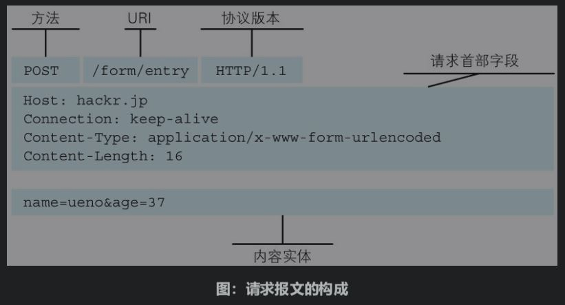
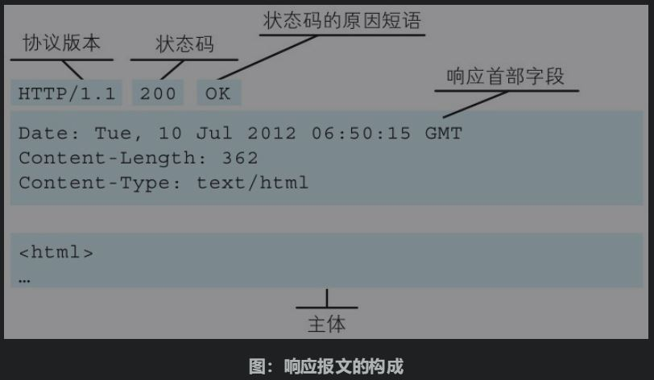
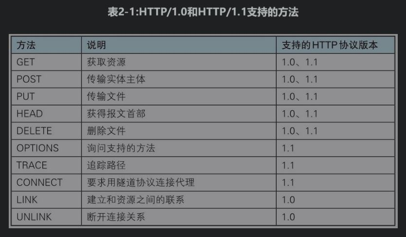
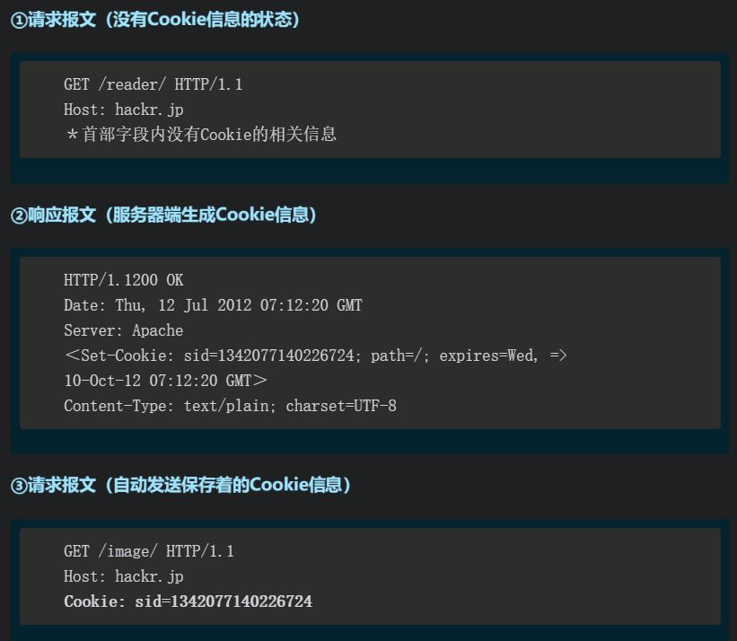

第一章 了解web及网络基础
Web使用一种名为HTTP（HyperText Transfer Protocol，超文本传输协议[插图]）的协议作为规范，完成从客户端到服务器端等一系列运作流程。
TCP/IP协议族
TCP/IP是在IP协议的通信过程中，使用到的协议族的统称。
计算机与网络设备要相互通信，双方就必须基于相同的方法。不同的硬件、操作系统之间的通信，所有的这一切都需要一种规则。而我们就把这种规则称为协议。
TCP/IP协议族分层
应用层决定了向用户提供应用服务时通信的活动。(FTP, DNS, HTTP)
传输层对上层应用层，提供处于网络连接中的两台计算机之间的数据传输。(TCP, UDP)
网络层用来处理在网络上流动的数据包,规定了通过怎样的路径（所谓的传输路线）到达对方计算机，并把数据包传送给对方。(IP)
数据链路层用来处理连接网络的硬件部分。
TCP/IP通信传输流
发送端在层与层之间传输数据时，每经过一层时必定会被打上一个该层所属的首部信息。
反之，接收端在层与层传输数据时，每经过一层时会把对应的首部消去。

IP TCP DNS
IP协议的作用是把各种数据包传送给对方。而要保证确实传送到对方那里，则需要满足IP地址和MAC地址。
IP地址指明了节点被分配到的地址，MAC地址是指网卡所属的固定地址。IP地址可以和MAC地址进行配对。IP地址可变换，但MAC地址基本上不会更改。
在网络上，通信的双方在同一局域网（LAN）内的情况是很少的，通常是经过多台计算机和网络设备中转才能连接到对方。而在进行中转时，会利用下一站中转设备的MAC地址来搜索下一个中转目标。这时，会采用ARP协议–根据通信方的IP地址就可以反查出对应的MAC地址。
TCP位于传输层，提供可靠的字节流服务。
字节流服务–为了方便传输，将大块数据分割成以报文段（segment）为单位的数据包进行管理。
可靠–为了准确无误地将数据送达目标处，TCP协议采用了三次握手（three-way handshaking）策略。(ACK&SYN)
若在握手过程中某个阶段莫名中断，TCP协议会再次以相同的顺序发送相同的数据包。
DNS提供域名到IP地址之间的解析服务，属于应用层。

URI URL
URI 统一资源标识符, 是由某个协议方案表示的资源的定位标识符。
URI用字符串标识某一互联网资源，而URL表示资源的地点（互联网上所处的位置）。可见URL是URI的子集。

登录信息（认证）可选。
服务器地址必须，可以是类似hackr.jp这种DNS可解析的名称，或是192.168.1.1这类IPv4地址名，还可以是[0:0:0:0:0:0:0:1]这样用方括号括起来的IPv6地址名。
服务器端口号可选。
带层次的文件路径、查询字符串、片段标识符可选。
第二章 最简单的HTTP协议
用于客户端和服务器端之间的通信
请求访问文本或图像等资源的一端称为客户端，而提供资源响应的一端称为服务器端。
请求 & 响应


头部 与 主体 间会以一空行隔开。
不保存状态
HTTP协议自身不对请求和响应之间的通信状态进行保存。使用HTTP协议，每当有新的请求发送时，就会有对应的新响应产生。
+：减少服务器cpu和内存消耗；更快地处理大量事务，确保协议的可伸缩性；
-：eg:保存用户登录状态
http1.1引入cookie管理状态。
根据请求中uri定位资源

除此之外，如果不是访问特定资源而是对服务器本身发起请求，可以用一个来代替请求URI。
如：查询HTTP服务器端支持的HTTP方法种类
OPTIONS HTTP/1.1
HTTP方法
GET：获取资源
POST：传输实体主体
PUT：传输文件，在请求报文的主体中包含文件内容，然后保存到请求URI指定的位置。
HEAD：获得报文首部，用于确认URI的有效性及资源更新的日期时间等。
DELETE：删除文件，按请求URI删除指定的资源。
OPTIONS：询问支持的方法
TRACE：追踪路径，让Web服务器端将之前的请求通信环回给客户端。
发送请求时，在Max-Forwards首部字段中填入数值，每经过一个服务器端就将该数字减1，当数值刚好减到0时，就停止继续传输，最后接收到请求的服务器端则返回状态码200 OK的响应。容易引发XST（Cross-Site Tracing，跨站追踪）攻击。
CONNECT方法要求在与代理服务器通信时建立隧道，实现用隧道协议进行TCP通信。主要使用SSL（安全套接层）和TLS（传输层安全）协议把通信内容加密后经网络隧道传输。

持久连接
HTTP协议的初始版本中，每进行一次HTTP通信就要断开一次TCP连接。
HTTP/1.1和一部分的HTTP/1.0想出了持久连接（HTTP keep-alive）的方法 – 只要任意一端没有明确提出断开连接，则保持TCP连接状态。
持久连接使得多数请求以管线化（pipelining）方式发送成为可能，同时并行发送多个请求。
Cookie
Cookie会根据从服务器端发送的响应报文内的一个叫做Set-Cookie的首部字段信息，通知客户端保存Cookie。当下次客户端再往该服务器发送请求时，客户端会自动在请求报文中加入Cookie值后发送出去。服务器端发现客户端发送过来的Cookie后，会去检查究竟是从哪一个客户端发来的连接请求，然后对比服务器上的记录，最后得到之前的状态信息。

第三章 HTTP报文

请求报文： 请求行 + 请求头部 + 空行 + 请求体
响应报文： 响应行 + 响应头部 + 空行 + 响应体
内容编码（报文主体 –> 实体主体）
通常，报文主体等于实体主体。只有当传输中进行编码操作时，实体主体的内容发生变化，才导致它和报文主体产生差异。
内容编码指明应用在实体内容上的编码格式，并保持实体信息原样压缩。内容编码后的实体由客户端接收并负责解码。
分块传输编码：会将实体主体分成多个部分（块）。每一块都会用十六进制来标记块的大小，而实体主体的最后一块会使用“0(CR+LF)”来标记。
在传输大容量数据时，通过把数据分割成多块，能够让浏览器逐步显示页面。
范围请求
针对范围请求，响应会返回状态码为206 Partial Content的响应报文。如果服务器端无法响应范围请求，则会返回状态码200 OK和完整的实体内容。
内容协商
内容协商机制是指客户端和服务器端就响应的资源内容进行交涉，然后提供给客户端最为适合的资源。内容协商会以响应资源的语言、字符集、编码方式等作为判断的基准。（●Accept●Accept-Charset●Accept-Encoding●Accept-Language●Content-Language）
第四章 HTTP状态码

2XX成功
200 OK
204 No Content 该状态码代表服务器接收的请求已成功处理，但在返回的响应报文中不含实体的主体部分，那么浏览器显示的页面不发生更新。
206 Partial Content 该状态码表示客户端进行了范围请求，而服务器成功执行了这部分的GET请求。
3XX重定向
301 Moved Permanently 永久性重定向。该状态码表示请求的资源已被分配了新的URI，以后应使用资源现在所指的URI，书签更新。
302 Found 临时性重定向。该状态码表示请求的资源已被分配了新的URI，希望用户（本次）能使用新的URI访问，书签不更新。
303 See Other 该状态码表示由于请求对应的资源存在着另一个URI，应使用GET方法定向获取请求的资源。
当301、302、303响应状态码返回时，几乎所有的浏览器都会把POST改成GET，并删除请求报文内的主体，之后请求会自动再次发送。301、302标准是禁止将POST方法改变成GET方法的，但实际使用时大家都会这么做
304 Not Modified 服务器端资源未改变，可直接使用客户端未过期的缓存
307 Temporary Redirect临时性重定向。307会遵照浏览器标准，不会从POST变成GET
4XX客户端错误
400 Bad Request 该状态码表示请求报文中存在语法错误
401 Unauthorized 该状态码表示发送的请求需要有通过HTTP认证（BASIC认证、DIGEST认证）的认证信息。
当浏览器初次接收到401响应，会弹出认证用的对话窗口。若之前已进行过1次请求，则表示用户认证失败。
403 Forbidden 该状态码表明对请求资源的访问被服务器拒绝了（获得文件系统的访问授权，访问权限出现某些问题）。
404 Not Found 该状态码表明服务器上无法找到请求的资源。
5XX服务器错误
500 Internal Server Error 该状态码表明服务器端在执行请求时发生了错误。
503 Service Unavailable 该状态码表明服务器暂时处于超负载或正在进行停机维护，现在无法处理请求。如果事先得知解除以上状况需要的时间，最好写 入Retry-After首部字段再返回给客户端。
第五章 与HTTP协作的Web服务器
用单台虚拟主机实现多个域名
即使物理层面只有一台服务器，但只要使用虚拟主机的功能，则可以假想已具有多台服务器。
如果www.tricorder.jp和www.hackr.jp这两个域名同时部署在同一个服务器上，使用DNS解析域名得到的IP地址相同。此时在发送HTTP请求时，必须在Host首部内完整指定主机名或域名的URI。
通信数据转发程序：代理、网关、隧道
代理
代理是一种有转发功能的应用程序，它扮演了位于服务器和客户端“中间人”的角色，接收由客户端发送的请求并转发给服务器，同时也接收服务器返回的响应并转发给客户端。
在HTTP通信过程中，可级联多台代理服务器。请求和响应的转发会经过数台类似锁链一样连接起来的代理服务器。转发时，需要附加Via首部字段以标记出经过的主机信息。

使用代理服务器的几种情况：
1.缓存代理：代理服务器保存资源，当再次访问时，取缓存，不用再次访问；
2.针对特定uri访问的控制
透明代理： 转发请求或响应时，不对报文做任何加工的代理类型被称为透明代理；反之，对报文内容进行加工的代理被称为非透明代理。
网关
网关能使通信线路上的服务器提供非HTTP协议服务。
利用网关能提高通信的安全性，因为可以在客户端与网关之间的通信线路上加密以确保连接的安全。比如，网关可以连接数据库，使用SQL语句查询数据。另外，在Web购物网站上进行信用卡结算时，网关可以和信用卡结算系统联动。

隧道
隧道可按要求建立起一条与其他服务器的通信线路，届时使用SSL等加密手段进行通信。隧道的目的是确保客户端能与服务器进行安全的通信。
隧道本身不会去解析HTTP请求。也就是说，请求保持原样中转给之后的服务器。隧道会在通信双方断开连接时结束。

缓存
缓存是指代理服务器或客户端本地磁盘内保存的资源副本。利用缓存可减少对源服务器的访问，因此也就节省了通信流量和通信时间。
有效期限： 当服务器上的资源更新后，不能再直接取缓存，所以需要判断有限期限这个字段，如果缓存过期了，还是需要重新向源服务器请求的。
客户端缓存： 浏览器缓存如果有效，就不必再向服务器请求相同的资源了，可以直接从本地磁盘内读取。过期的话，也需要重新向源服务器请求。
第六章 HTTP首部
首部结构


若HTTP首部字段重复了，根据浏览器内部处理逻辑的不同，有些浏览器会优先处理第一次出现的首部字段，而有些则会优先处理最后出现的首部字段。
主要分为
通用首部字段：请求报文和响应报文两方都会使用的首部。
请求首部字段：从客户端向服务器端发送请求报文时使用的首部，补充了请求的附加内容、客户端信息、响应内容相关优先级等信息。
响应首部字段：从服务器端向客户端返回响应报文时使用的首部。补充了响应的附加内容，也会要求客户端附加额外的内容信息。
实体首部字段：针对请求报文和响应报文的实体部分使用的首部。补充了资源内容更新时间等与实体有关的信息。
HTTP/1.1 通用首部字段
Cache-Control
Connection
Connection首部字段具备如下两个作用：
1.申明不再转发给代理的首部字段， eg: Connection: Upgrade （代理服务器会把Upgrade字段删除后再转发给服务器）
2.管理持久连接 eg: HTTP/1.1版本的默认连接都是持久连接， 当服务器端想明确断开连接时，Connection: close;
HTTP/1.1之前的HTTP版本的默认连接都是非持久连接，如果想在旧版本的HTTP协议上维持持续连接，Connection: Keep-Alive。
Date
创建HTTP报文的日期和时间
Date: Tue, 03 Jul 2012 04:40:59 GMT
Pragma
Pragma是HTTP/1.1之前版本的历史遗留字段，仅作为与HTTP/1.0的向后兼容而定义。
Pragma: no-cache 只用在客户端发送的请求中。客户端会要求所有的中间服务器不返回缓存的资源。
所有的中间服务器如果都能以HTTP/1.1为基准，那直接采用Cache-Control: no-cache指定缓存的处理方式是最为理想的。
不能满足的情况下， 一般发送的请求会同时含有
Pragma: no-cache
Cache-Control: no-cache
两个字段。
Trailer
说明在报文主体后（分块长度0之后）还记录了哪些字段，用于分段传输。
Transfer-Encoding
规定了传输报文主体时采用分块传输编码
Transfer-Encoding: chunked
Upgrade
用于检测HTTP协议及其他协议是否可使用更高的版本进行通信。
对于附有首部字段Upgrade的请求，服务器可用101 Switching Protocols状态码作为响应返回。、
Via
为了追踪客户端与服务器之间的请求和响应报文的传输路径。
报文经过代理或网关时，会先在首部字段Via中附加该服务器的信息，然后再进行转发。
不仅用于追踪报文的转发，还可避免请求回环的发生。
Via首部是为了追踪传输路径，所以经常会和TRACE方法一起使用。比如，代理服务器接收到由TRACE方法发送过来的请求（其中Max-Forwards: 0）时，代理服务器就不能再转发该请求了。这种情况下，代理服务器会将自身的信息附加到Via首部后，返回该请求的响应。
Warning
HTTP/1.1的Warning首部是从HTTP/1.0的响应首部（Retry-After）演变过来的。该首部通常会告知用户一些与缓存相关的问题的警告。
Warning: [警告码][警告的主机：端口号] “[警告内容]” ([日期时间])

HTTP/1.1 请求首部字段
Accept
用户代理能够处理的媒体类型及媒体类型的相对优先级。
●文本文件text/html, text/plain, text/css …application/xhtml+xml, application/xml …
●图片文件image/jpeg, image/gif, image/png …
●视频文件video/mpeg, video/quicktime …
●应用程序使用的二进制文件application/octet-stream, application/zip …
eg: Accept: text/html, application/xhtml+xml, application/xml; q=0.9, /; q=0.8
q为权重，0 < q < 1，默认q=1。优先接受text/html, application/xhtml+xml，然后是权重为0.9的 application/xml，最后是权重为0.8的任何类型。
当服务器提供多种内容时，将会首先返回权重值最高的媒体类型。
Accept-Charset
用户代理支持的字符集及字符集的相对优先顺序。该首部字段应用于内容协商机制的服务器驱动协商。
Accept-Encoding
用户代理支持的内容编码及内容编码的优先级顺序。
●gzip由文件压缩程序gzip（GNU zip）生成的编码格式（RFC1952），采用Lempel-Ziv算法（LZ77）及32位循环冗余校验（Cyclic Redundancy Check，通称CRC）。
●compress由UNIX文件压缩程序compress生成的编码格式，采用Lempel-Ziv-Welch算法（LZW）。
●deflate组合使用zlib格式（RFC1950）及由deflate压缩算法（RFC1951）生成的编码格式。
●identity不执行压缩或不会变化的默认编码格式
Accept-Language
用户代理能够处理的自然语言集（指中文或英文等），以及自然语言集的相对优先级。
Authorization
用户代理的认证信息（证书值）。
通常，想要通过服务器认证的用户代理会在接收到返回的401状态码响应后，把首部字段Authorization加入请求中。
Expect
客户端使用首部字段Expect来告知服务器，期望出现的某种特定行为。
因服务器无法理解客户端的期望作出回应而发生错误时，会返回状态码417 Expectation Failed。
客户端可以利用该首部字段，写明所期望的扩展。虽然HTTP/1.1规范只定义了100-continue（状态码100 Continue之意）。
From
使用用户代理的用户的电子邮件地址。
使用代理时，应尽可能包含From首部字段（但可能会因代理不同，将电子邮件地址记录在User-Agent首部字段内）。
Host
告知服务器，请求的资源所处的互联网主机名和端口号。
Host首部字段在HTTP/1.1规范内是唯一一个必须被包含在请求内的首部字段。
请求被发送至服务器时，请求中的主机名会用IP地址直接替换解决。但如果这时，相同的IP地址下部署运行着多个域名，那么服务器就会无法理解究竟是哪个域名对应的请求。因此，就需要使用首部字段Host来明确指出请求的主机名。若服务器未设定主机名，那直接发送一个空值即可。
If-Match
形如If-xxx这种样式的请求首部字段，都可称为条件请求。服务器接收到附带条件的请求后，只有判断指定条件为真时，才会执行请求。
服务器会比对If-Match的字段值和资源的ETag值，仅当两者一致时，才会执行请求。反之，则返回状态码412 Precondition Failed的响应。
还可以使用星号（*）指定If-Match的字段值。针对这种情况，服务器将会忽略ETag的值，只要资源存在就处理请求。
If-None-Match
If-None-Match === ETag
和首部字段If-Match作用相反。用于指定If-None-Match字段值的实体标记（ETag）值与请求资源的ETag不一致时，它就告知服务器处理该请求。
If-Modified-Since
If-Modified-Since === Last-Modified
告知服务器若If-Modified-Since字段值早于资源的更新时间，则希望能处理该请求。而在指定If-Modified-Since字段值的日期时间之后，如果请求的资源都没有过更新，则返回状态码304 Not Modified的响应。
If-Unmodified-Since
首部字段If-Unmodified-Since和首部字段If-Modified-Since的作用相反。它的作用的是告知服务器，指定的请求资源只有在字段值内指定的日期时间之后，未发生更新的情况下，才能处理请求。如果在指定日期时间后发生了更新，则以状态码412 Precondition Failed作为响应返回。
If-Range
若指定的If-Range字段值（ETag值或者时间）和请求资源的ETag值或时间相一致时，则作为范围请求处理。反之，则返回全体资源。
服务器端的资源如果更新，那客户端持有资源中的一部分也会随之无效，当然，范围请求作为前提是无效的。这时，服务器会暂且以状态码412 Precondition Failed作为响应返回，其目的是催促客户端再次发送请求，总共需要两次请求才可以拿到更新的资源。但如果使用If-Range，则只需要一次请求，如果一致的话，就返回Range字段对应的范围。
Max-Forwards
通过TRACE方法或OPTIONS方法，发送包含首部字段Max-Forwards的请求时，该字段以十进制整数形式指定可经过的服务器最大数目。服务器在往下一个服务器转发请求之前，会将Max-Forwards的值减1后重新赋值。当服务器接收到Max-Forwards值为0的请求时，则不再进行转发，而是直接返回响应。
可以用于排查服务器无响应的原因，至少可以知道作为终点服务器的通信情况。
Proxy-Authorization
接收到从代理服务器发来的认证质询时，客户端会发送包含首部字段Proxy-Authorization的请求，以告知服务器认证所需要的信息。
发生在客户端与代理服务器之间，与客户端与服务器之间的Authorization字段作用相同。
Range
范围请求的范围值。
接收到附带Range首部字段请求的服务器，会在处理请求之后返回状态码为206 PartialContent的响应。无法处理该范围请求时，则会返回状态码200 OK的响应及全部资源。
Referer
请求的原始资源的URI。
客户端一般都会发送Referer首部字段给服务器。但当直接在浏览器的地址栏输入URI，或出于安全性的考虑时，也可以不发送该首部字段。
因为原始资源的URI中的查询字符串可能含有ID和密码等保密信息，要是写进Referer转发给其他服务器，则有可能导致保密信息的泄露。
TE
客户端能够处理响应的传输编码方式及相对优先级。
User-Agent
将创建请求的浏览器和用户代理名称等信息传达给服务器。
由网络爬虫发起请求时，有可能会在字段内添加爬虫作者的电子邮件地址。此外，如果请求经过代理，那么中间也很可能被添加上代理服务器的名称。
HTTP/1.1 响应首部字段
Accept-Ranges
告知客户端服务器是否能处理范围请求，以指定获取服务器端某个部分的资源。
Accept-Ranges: bytes / none
Age
告知客户端，源服务器在多久前创建了响应。字段值的单位为秒。
若创建该响应的服务器是缓存服务器，Age值是指缓存后的响应再次发起认证到认证完成的时间值。
ETag
一种可将资源以字符串形式做唯一性标识的方式。服务器会为每份资源分配对应的ETag值。当资源更新时，ETag值也需要更新。
生成ETag值时，并没有统一的算法规则，而仅仅是由服务器来分配。
资源被缓存时，就会被分配唯一性标识。例如，当使用中文版的浏览器访问http://www.google.com/时，就会返回中文版对应的资源，而使用英文版的浏览器访问时，则会返回英文版对应的资源。两者的URI是相同的，所以仅凭URI指定缓存的资源是相当困难的。若在下载过程中出现连接中断、再连接的情况，都会依照ETag值来指定资源。
强ETag值：不论实体发生多么细微的变化都会改变其值。
弱ETag值：只用于提示资源是否相同。只有资源发生了根本改变，产生差异时才会改变ETag值。这时，会在字段值最开始处附加W/。
Location
可以将响应接收方引导至某个与请求URI位置不同的资源。
基本上，该字段会配合3xx:Redirection的响应，提供重定向的URI。
Proxy-Authenticate
把由代理服务器所要求的认证信息发送给客户端。
发生在客户端与代理服务器之间，与客户端与服务器之间的WWW-Authorization字段作用相同。
Retry-After
告知客户端应该在多久之后再次发送请求。主要配合状态码503 ServiceUnavailable响应，或3xx Redirect响应一起使用。
字段值可以指定为具体的日期时间（Wed, 04 Jul 2012 06:34:24 GMT等格式），也可以是创建响应后的秒数。
Server
当前服务器上安装的HTTP服务器应用程序的信息。不单单会标出服务器上的软件应用名称，还有可能包括版本号和安装时启用的可选项。
eg: Server: Apache/2.2.17(Unix)
Vary
源服务器会向代理服务器传达关于本地缓存使用方法的命令，只有满足Vary指定的字段值相同时，才可以取缓存，否则需要向源服务器重新请求。
WWW-Authenticate
用于HTTP访问认证。它会告知客户端适用于访问请求URI所指定资源的认证方案（Basic或是Digest）和带参数提示的质询（challenge）。状态码401Unauthorized响应中，肯定带有首部字段WWW-Authenticate。
HTTP/1.1 实体首部字段
Allow
用于通知客户端能够支持Request-URI指定资源的所有HTTP方法。当服务器接收到不支持的HTTP方法时，会以状态码405 Method Not Allowed作为响应返回。与此同时，还会把所有能支持的HTTP方法写入首部字段Allow后返回。
Content-Encoding
服务器对实体的主体部分选用的内容编码方式。内容编码是指在不丢失实体信息的前提下所进行的压缩。
●gzip ●compress ●deflate ●identity
Content-Language
告知客户端，实体主体使用的自然语言（指中文或英文等语言）。
Content-Length
表明了实体主体部分的大小（单位是字节）。对实体主体进行内容编码传输时，不能再使用Content-Length首部字段。
Content-Location
给出与报文主体部分相对应的URI。和首部字段Location不同，Content-Location表示的是报文主体返回资源对应的URI。
比如，对于使用首部字段Accept-Language的服务器驱动型请求，当返回的页面内容与实际请求的对象不同时，首部字段Content-Location内会写明URI。（访问http://www.hackr.jp/返回的对象却是http://www.hackr.jp/index-ja.html等类似情况）
Content-MD5
客户端会对接收的报文主体执行相同的MD5算法，然后与首部字段Content-MD5的字段值比较，用于检查报文主体在传输过程中是否保持完整，以及确认传输到达。
对报文主体执行MD5算法获得的128位二进制数，再通过Base64编码后将结果写入Content-MD5字段值。
采用这种方法，对内容上的偶发性改变是无从查证的，也无法检测出恶意篡改。
Content-Range
针对范围请求，返回响应时使用的首部字段Content-Range，能告知客户端作为响应返回的实体的哪个部分符合范围请求。
eg: Content-Range: bytes 5001-10000/10000 字段值以字节为单位，表示当前发送部分及整个实体大小。
Content-Type
实体主体内对象的媒体类型。
Expires
首部字段Expires会将资源失效的日期告知客户端。缓存服务器在接收到含有首部字段Expires的响应后，会以缓存来应答请求，在Expires字段值指定的时间之前，响应的副本会一直被保存。当超过指定的时间后，缓存服务器在请求发送过来时，会转向源服务器请求资源。
源服务器不希望缓存服务器对资源缓存时，最好在Expires字段内写入与首部字段Date相同的时间值。
但是，当首部字段Cache-Control有指定max-age指令时，比起首部字段Expires，会优先处理max-age指令。
Last-Modified
指明资源最终修改的时间。
为Cookie服务的首部字段
Set-Cookie
-NAME = VALUE Cookie的名称和值
-expires：指定浏览器可发送Cookie的有效期。当省略expires属性时，其有效期仅限于维持浏览器会话（Session）时间段内。另外，一旦Cookie从服务器端发送至客户端，服务器端就不存在可以显式删除Cookie的方法。但可通过覆盖已过期的Cookie，实现对客户端Cookie的实质性删除操作。
-path：限制指定Cookie的发送范围的文件目录
-domain：指定的域名可做到与结尾匹配一致。比如，当指定example.com后，除example.com以外，www.example.com或www2.example.com等都可以发送Cookie。因此，除了针对具体指定的多个域名发送Cookie之外，不指定domain属性显得更安全
-secure：用于限制Web页面仅在HTTPS安全连接时，才可以发送Cookie
-HttpOnly：Cookie的扩展功能，它使JavaScript脚本无法获得Cookie。其主要目的为防止跨站脚本攻击（Cross-site scripting,XSS）对Cookie的信息窃取。
另外顺带一提，该扩展并非是为了防止XSS而开发的。
Cookie
告知服务器，当客户端想获得HTTP状态管理支持时，就会在请求中包含从服务器接收到的Cookie。接收到多个Cookie时，同样可以以多个Cookie形式发送。
其他首部字段
X-Frame-Options
属于HTTP响应首部，用于控制网站内容在其他Web网站的Frame标签内的显示问题。其主要目的是为了防止点击劫持（clickjacking）攻击。
首部字段X-Frame-Options有以下两个可指定的字段值。
● DENY：拒绝
● SAMEORIGIN：仅同源域名下的页面（Top-level-browsing-context）匹配时许可。
X-XSS-Protection
属于HTTP响应首部，它是针对跨站脚本攻击（XSS）的一种对策，用于控制浏览器XSS防护机制的开关。
首部字段X-XSS-Protection可指定的字段值如下。
● 0 ：将XSS过滤设置成无效状态
● 1 ：将XSS过滤设置成有效状态
DNT
属于HTTP请求首部，其中DNT是Do Not Track的简称，意为拒绝个人信息被收集，是表示拒绝被精准广告追踪的一种方法。
首部字段DNT可指定的字段值如下。
● 0 ：同意被追踪
● 1 ：拒绝被追踪
P3P
属于HTTP响应首部，通过利用P3P技术，可以让Web网站上的个人隐私变成一种仅供程序可理解的形式，以达到保护用户隐私的目的。
第七章 确保web安全的HTTPS
HTTP的缺点
通信使用明文，可能会被窃听
由于HTTP本身不具备加密的功能，所以也无法做到对通信整体（使用HTTP协议通信的请求和响应的内容）进行加密。
即，HTTP报文使用明文（指未经过加密的报文）方式发送。
按TCP/IP协议族的工作机制，通信内容在所有的通信线路上都有可能遭到窥视。即使已经过加密处理的通信，也会被窥视到通信内容，但需要进一步破密才行。
通信加密：HTTP协议中没有加密机制，但可以通过和SSL（Secure SocketLayer，安全套接层）或TLS（Transport Layer Security，安全传输层协议）的组合使用，用SSL建立安全通信线路之后，就可以在这条线路上进行HTTP通信了。与SSL组合使用的HTTP被称为HTTPS（HTTP Secure，超文本传输安全协议）。
报文加密：由于HTTP协议中没有加密机制，那么就对HTTP协议传输的内容本身加密。即把HTTP报文主体进行加密处理（首部不加密）。为了做到有效的内容加密，前提是要求客户端和服务器同时具备加密和解密机制。但这个不同于SSL或TLS将整个通信线路加密处理，所以内容仍有被篡改的风险。
不验证通信方的身份，可能遭遇伪装
在HTTP协议通信时，由于不存在确认通信方的处理步骤，
任何人都可以发起请求；
服务器只要接收到请求，不管对方是谁都会返回一个响应（但也仅限于发送端的IP地址和端口号没有被Web服务器设定限制访问的前提下）。
无法确定正在通信的对方是否具备访问权限。
即使是无意义的请求也会照单全收。无法阻止海量请求下的DoS攻击（Denial ofService，拒绝服务攻击）。
使用SSL不仅可以加密，还通过证书用于确定通信方。证书由值得信任的第三方机构颁发，用以证明服务器和客户端是实际存在的，难以伪造。
所以只要能够确认通信方（服务器或客户端）持有的证书，即可判断通信方的真实意图。
无法证明报文完整性，可能已遭篡改
在请求或响应送出之后直到对方接收之前的这段时间内，即使请求或响应的内容遭到篡改–中间人攻击，
没有任何办法确认，发出的请求/响应和接收到的请求/响应是前后相同的。
HTTP协议可以使用MD5和SHA-1等散列值校验的方法，以及用来确认文件的数字签名方法来确认报文的完整性。
但是，这两种方法都需要用户自行验证，浏览器无法完成；同时也不完全可靠。
为了有效防止这些弊端，有必要使用HTTPS。SSL提供认证和加密处理及摘要功能。
HTTP+加密+认证+完整性保护=HTTPS
经常会在Web的登录页面和购物结算界面等使用HTTPS通信。使用HTTPS通信时，不再用http://，而是改用https://。另外，当浏览器访问HTTPS通信有效的Web网站时，浏览器的地址栏内会出现一个带锁的标记。对HTTPS的显示方式会因浏览器的不同而有所改变。
HTTPS只是在HTTP通信接口部分用SSL（Secure Socket Layer）和TLS（Transport Layer Security）协议代替而已。通常，HTTP直接和TCP通信。当使用SSL时，则演变成先和SSL通信，再由SSL和TCP通信了。在采用SSL后，HTTP就拥有了HTTPS的加密、证书和完整性保护这些功能。SSL是独立于HTTP的协议，所以不光是HTTP协议，其他运行在应用层的SMTP和Telnet等协议均可配合SSL协议使用。
通信过程
对称加密：加密和解密同用一个密钥
非对称加密：一把叫做私有密钥（private key），另一把叫做公开密钥（public key）。发送密文的一方使用对方的公开密钥进行加密处理，对方收到被加密的信息后，再使用自己的私有密钥进行解密
HTTPS采用混合加密，使用非对称加密交换在之后的对称加密中要使用的密钥，确保密钥安全的情况下，之后的通信使用对称加密。
SSL & TSL
SSL技术最初是由浏览器开发商网景通信公司率先倡导的，开发过SSL3.0之前的版本。目前主导权已转移到IETF（Internet Engineering Task Force,Internet工程任务组）的手中。IETF以SSL3.0为基准，后又制定了TLS1.0、TLS1.1和TLS1.2。TSL是以SSL为原型开发的协议，有时会统一称该协议为SSL。当前主流的版本是SSL3.0和TLS1.0。
SSL速度慢
1.通信慢–和使用HTTP相比，网络负载可能会变慢2到100倍。除去和TCP连接、发送HTTP请求·响应以外，还必须进行SSL通信，因此整体上处理通信量不可避免会增加。
2.加密解密操作使得处理速度慢–比起HTTP，HTTPS会更多地消耗服务器和客户端的CPU及内存等资源，导致负载增强。
因此，如果是非敏感信息则使用HTTP通信，只有在包含个人信息等敏感数据时，才利用HTTPS加密通信。特别是每当那些访问量较多的Web网站在进行加密处理时，它们所承担着的负载不容小觑。在进行加密处理时，并非对所有内容都进行加密处理，而是仅在那些需要信息隐藏时才会加密，以节约资源。
确认访问用户身份的认证
主要介绍HTTP/1.1使用的几种认证方式。
BASIC认证
BASIC认证（基本认证）是从HTTP/1.0就定义的认证方式。即便是现在仍有一部分的网站会使用这种认证方式。是Web服务器与通信客户端之间进行的认证方式。
假设用户ID为guest，密码是guest，连接起来就会形成guest:guest这样的字符串。然后经过Base64编码，最后的结果即是Z3Vlc3Q6Z3Vlc3Q=。把这串字符串写入首部字段Authorization后，发送请求。当用户代理为浏览器时，用户仅需输入用户ID和密码即可，之后，浏览器会自动完成到Base64编码的转换工作。
存在问题：
1.BASIC认证虽然采用Base64编码方式，但这不是加密处理。不需要任何附加信息即可对其解码。
2.想再进行一次BASIC认证时，一般的浏览器却无法实现认证注销操作。
DIGEST认证
为弥补BASIC认证存在的弱点，从HTTP/1.1起就有了DIGEST认证。DIGEST认证同样使用质询/响应的方式（challenge/response），但不会像BASIC认证那样直接发送明文密码。服务器将质询码发送给客户端，客户端根据质询码计算出响应码，并发送。
1.首部字段WWW-Authenticate内必须包含realm和nonce这两个字段的信息。nonce是一种每次随返回的401响应生成的任意随机字符串。该字符串通常推荐由Base64编码的十六进制数的组成形式，但实际内容依赖服务器的具体实现。
2.首部字段Authorization内必须包含username、realm、nonce、uri和response的字段信息。其中，realm和nonce就是之前从服务器接收到的响应中的字段。response也可叫做Request-Digest，存放经过MD5运算后的密码字符串，形成响应码。
DIGEST认证提供了高于BASIC认证的安全等级，但是和HTTPS的客户端认证相比仍旧很弱。DIGEST认证提供防止密码被窃听的保护机制，但并不存在防止用户伪装的保护机制。
SSL客户端认证
前两种方式采用用户ID和密码的认证方式，只要二者的内容正确，即可认证是本人的行为，但如果用户ID和密码被盗，就很有可能被第三者冒充，存在安全隐患。
SSL客户端认证是借由HTTPS的客户端证书，服务器可确认访问是否来自已登录的客户端。
步骤1： 接收到需要认证资源的请求，服务器会发送Certificate Request报文，要求客户端提供客户端证书。
步骤2： 用户选择将发送的客户端证书后，客户端会把客户端证书信息以Client Certificate报文方式发送给服务器。
步骤3： 服务器验证客户端证书验证通过后方可领取证书内客户端的公开密钥，然后开始HTTPS加密通信。
在多数情况下，SSL客户端认证一般会和基于表单认证（稍后讲解）组合形成一种双因素认证（Two-factor authentication）来使用。
第一个认证因素的SSL客户端证书用来认证客户端计算机，另一个认证因素的密码则用来确定这是用户本人的行为。
SSL客户端认证需要一定的费用从认证机构购买客户端证书，或者维持自己搭建的认证机构的安全运营。
基于表单认证
由于使用上的便利性及安全性问题，HTTP协议标准提供的BASIC认证和DIGEST认证几乎不怎么使用。
另外，SSL客户端认证虽然具有高度的安全等级，但因为导入及维持费用等问题，还尚未普及。
所以对于Web网站的认证功能，能够满足其安全使用级别的标准规范并不存在，所以只好多半Web应用程序使用各自实现基于表单的认证方式。
鉴于HTTP是无状态协议，之前已认证成功的用户状态无法通过协议层面保存下来。一般用cookie来管理session，实现状态管理。
第九章 基于HTTP的功能追加协议
随着Web的用途越来越多样性，HTTP协议不能满足，所以出现了一些基于HTTP协议并提供新功能的协议。
消除HTTP瓶颈的SPDY
Google在2010年发布了SPDY（取自SPeeDY，发音同speedy），其开发目标旨在解决HTTP的性能瓶颈，缩短Web页面的加载时间（50%）。
HTTP瓶颈:
当几百、几千万的用户发布内容时，Web网站为了保存这些新增内容，在很短的时间内就会发生大量的内容更新。为了尽可能实时地显示这些更新的内容，服务器上一有内容更新，就需要直接把那些内容反馈到客户端的界面上，HTTP却无法妥善地处理好这项任务。
●一条连接上只可发送一个请求。
●请求只能从客户端开始。客户端不可以接收除响应以外的指令。
●请求/响应首部未经压缩就发送。首部信息越多延迟越大。
●发送冗长的首部。每次互相发送相同的首部造成的浪费较多。
●可任意选择数据压缩格式。非强制压缩发送。
Ajax：局部Web页面替换加载的异步通信手段，由于它只更新一部分页面，响应中传输的数据量会因此而减少。但大量请求问题没有得到解决。
Comet：为了实现推送功能，Comet会先将响应置于挂起状态，当服务器端有内容更新时，再返回该响应，实现了实时更新。但为了保留响应，一次连接的持续时间也变长了。期间，为了维持连接会消耗更多的资源。
SPDY
SPDY没有完全改写HTTP协议，而是在TCP/IP的应用层与传输层之间通过新加会话层的形式运作。同时，考虑到安全性问题，SPDY规定通信中使用SSL。
SPDY以会话层的形式加入，控制对数据的流动，但还是采用HTTP建立通信连接。因此，可照常使用HTTP的GET和POST等方法、Cookie以及HTTP报文等。
使用SPDY后，HTTP协议额外获得以下功能：
1.多路复用：流通过单一的TCP连接，可以无限制处理多个HTTP请求。所有请求的处理都在一条TCP连接上完成，因此TCP的处理效率得到提高。
2.赋予请求优先级：SPDY不仅可以无限制地并发处理请求，还可以给请求逐个分配优先级顺序。这样主要是为了在发送多个请求时，解决因带宽低而导致响应变慢的问题。
3.压缩HTTP首部压缩：HTTP请求和响应的首部。这样一来，通信产生的数据包数量和发送的字节数就更少了。
4.推送功能：支持服务器主动向客户端推送数据的功能。这样，服务器可直接发送数据，而不必等待客户端的请求。
5.服务器提示功能：服务器可以主动提示客户端请求所需的资源。由于在客户端发现资源之前就可以获知资源的存在，因此在资源已缓存等情况下，可以避免发送不必要的请求。
缺陷： SPDY基本上只是将单个域名（IP地址）的通信多路复用，所以当一个Web网站上使用多个域名下的资源，改善效果就会受到限制。
使用浏览器进行全双工通信的WebSocket
WebSocket，即Web浏览器与Web服务器之间全双工通信标准。
一旦Web服务器与客户端之间建立起WebSocket协议的通信连接，之后所有的通信都依靠这个专用协议进行。
通信过程中可客户端与服务器可以互相发送JSON、XML、HTML或图片等任意格式的数据。
WebSocket协议的主要特点：
1.推送功能：支持由服务器向客户端推送数据的推送功能。这样，服务器可直接发送数据，而不必等待客户端的请求。
2.减少通信量：只要建立起WebSocket连接，就希望一直保持连接状态。和HTTP相比，不但每次连接时的总开销减少，而且由于WebSocket的首部信息很小，通信量也相应减少了。
在HTTP连接建立之后，需要完成一次“握手”，才能实现WebSocket通信。
成功握手确立WebSocket连接之后，通信时不再使用HTTP的数据帧，而采用WebSocket独立的数据帧。
API使用可以参见The WebSocket API.
HTTP2.0
这本书写在http2.0实现标准化之前，所以内容有点不够新。
所以我自己搜索的，与1.1的不同在于：
HTTP/2采用二进制格式而非文本格式
HTTP/2是完全多路复用的，而非有序并阻塞的——只需一个连接即可实现并行
使用报头压缩，HTTP/2降低了开销
HTTP/2让服务器可以将响应主动“推送”到客户端缓存中
Web服务器管理文件的WebDAV
一个可对Web服务器上的内容直接进行文件复制、编辑等操作的分布式文件系统。它作为扩展HTTP/1.1的协议。
它还具备文件创建者管理、文件编辑过程中禁止其他用户内容覆盖的加锁功能，以及对文件内容修改的版本控制功能。
使用HTTP/1.1的PUT方法和DELETE方法，就可以对Web服务器上的文件进行创建和删除操作。可是出于安全性及便捷性等考虑，一般不使用。
一些新概念：
集合（Co lection）：是一种统一管理多个资源的概念。以集合为单位可进行各种操作。也可实现类似集合的集合这样的叠加。
资源（Resource）：把文件或集合称为资源。
属性（Property）：定义资源的属性。定义以“名称=值”的格式执行。
锁（Lock）：把文件设置成无法编辑状态。多人同时编辑时，可防止在同一时间进行内容写入。
追加方法：
PROPFIND：获取属性
PROPPATCH：修改属性
MKCOL：创建集合
COPY：复制资源及属性
MOVE：移动资源
LOCK：资源加锁
UNLOCK：资源解锁
追加状态码：
102 Processing：可正常处理请求，但目前是处理中状态
207 Multi-Status：存在多种状态
422 Unprocessible Entity：格式正确，内容有误
423 Locked：资源已被加锁
424 Failed Dependency：处理与某请求关联的请求失败，因此不再维持依赖关系
507 Insufficient Storage：保存空间不足
第十章 构建Web内容的技术
HTML
Web页面几乎全由HTML构建。由HTML构成的文档经过浏览器的解析、渲染后，呈现出来的结果就是Web页面。
Tim Berners-Lee提出HTTP概念的同时，还提出了HTML原型。1993年在伊利诺伊大学的NCSA（The National Center for Supercomputing Applications，国家超级计算机应用中心）发布了Mosaic浏览器（世界首个图形界面浏览器程序），而能够被Mosaic解析的HTML，统一标准后即作为HTML 1.0发布。
CSS（Cascading Style Sheets，层叠样式表）可以指定如何展现HTML内的各种元素，属于样式表标准之一。CSS的理念就是让文档的结构和设计分离，达到解耦的目的。
动态HTML
动态HTML技术是通过调用客户端脚本语言JavaScript，实现对HTML的Web页面的动态改造。
利用DOM（Document Object Model，文档对象模型）可指定欲发生动态变化的HTML元素。
DOM是用以操作HTML文档和XML文档的API（Application Programming Interface，应用编程接口）。
使用DOM可以将HTML内的元素当作对象操作，如取出元素内的字符串、改变那个CSS的属性等，使页面的设计发生改变。
Web应用
类似这种由程序创建的内容称为动态内容，而事先准备好的内容称为静态内容。Web应用则作用于动态内容之上。
CGI（Common Gateway Interface，通用网关接口）是指Web服务器在接收到客户端发送过来的请求后转发给程序的一组机制。在CGI的作用下，程序会对请求内容做出相应的动作，比如创建HTML等动态内容。使用CGI的程序叫做CGI程序，通常是用Perl、PHP、Ruby和C等编程语言编写而成。
Servlet是一种能在服务器上创建动态内容的程序。Servlet是用Java语言实现的一个接口，属于面向企业级Java（JavaEE,Java Enterprise Edition）的一部分。之前提及的CGI，由于每次接到请求，程序都要跟着启动一次。因此一旦访问量过大，Web服务器要承担相当大的负载。而Servlet运行在与Web服务器相同的进程中，因此受到的负载较小[插图]。Servlet的运行环境叫做Web容器或Servlet容器。
数据发布的格式及语言
XML：XML和HTML一样，使用标签构成树形结构，并且可自定义扩展标签。从XML文档中读取数据比起HTML更为简单。由于XML的结构基本上都是用标签分割而成的树形结构，因此通过语法分析器（Parser）的解析功能解析XML结构并取出数据元素，可更容易地对数据进行读取。更容易地复用数据使得XML在互联网上被广泛接受。比如，可用在2个不同的应用之间的交换数据格式化。
RSS（简易信息聚合，也叫聚合内容）和Atom都是发布新闻或博客日志等更新信息文档的格式的总称。两者都用到了XML。
JSON：JSON（JavaScript Object Notation）是一种以JavaScript（ECMAScript）的对象表示法为基础的轻量级数据标记语言。能够处理的数据类型有false/null/true/对象/数组/数字/字符串，这7种类型。JSON让数据更轻更纯粹，并且JSON的字符串形式可被JavaScript轻易地读入。当初配合XML使用的Ajax技术也让JSON的应用变得更为广泛。另外，其他各种编程语言也提供丰富的库类，以达到轻便操作JSON的目的。
第十一章 Web的攻击技术
HTTP协议本身并不存在安全性问题，应用HTTP协议的服务器和客户端，以及运行在服务器上的Web应用等资源才是攻击目标。
多数攻击以Web站点为攻击对象。
从整体上看，HTTP就是一个通用的单纯协议机制。因此它具备较多优势，但是在安全性方面则呈劣势。
开发者需要自行设计并开发认证及会话管理功能来满足Web应用的安全。自行设计就出现了多种多样的实现，存在较多的安全漏洞。
在客户端即可篡改请求，在HTTP请求报文内加载攻击代码，就能发起对Web应用的攻击。
攻击模式主要分为：
1.以服务器为目标的主动攻击：攻击者通过直接访问Web应用，把攻击代码传入的攻击模式。由于该模式是直接针对服务器上的资源进行攻击，因此攻击者需要能够访问到那些资源。（SQL注入攻击和OS命令注入攻击）
2.以服务器为目标的被动攻击：利用圈套策略执行攻击代码的攻击模式。 攻击者诱使用户触发已设置好的陷阱，而陷阱会启动发送已嵌入攻击代码的HTTP请求。执行完攻击代码，存在安全漏洞的Web应用会成为攻击者的跳板，可能导致用户所持的Cookie等个人信息被窃取，登录状态中的用户权限遭恶意滥用等后果。利用用户身份，可以访问用户有权限的全部网站，包括企业内网。
因输出值转义不完全引发的安全漏洞
Web应用的安全对策主要分为：
1.客户端验证
2.服务器端验证：输入值验证 + 输出值转义
多数情况下采用JavaScript在客户端验证数据。可是在客户端允许篡改数据或关闭JavaScript，不适合将JavaScript验证作为安全的防范对策。保留客户端验证只是为了尽早地辨识输入错误，起到提高UI体验的作用。
输入值验证通常是指检查是否是符合系统业务逻辑的数值或检查字符编码等预防对策；所以安全对策主要靠针对输出做值转义处理。
跨站脚本攻击XSS
通过存在安全漏洞的Web网站注册用户的浏览器内运行非法的HTML标签或JavaScript进行的一种攻击。
1.input框中输入script攻击代码，会被解析执行
2.诱导用户点击访问陷阱url，在input框中输入个人信息，url中代码会提取用户信息发送到攻击者网站，页面登录流程正常，用户无法察觉
3.诱导用户点击访问陷阱url，url中拼接一个用于获取cookie的js文件地址，可拿到用户cookie
SQL注入攻击
针对Web应用使用的数据库，通过运行非法的SQL而产生的攻击。
如果在调用SQL语句的方式上存在疏漏，就有可能执行被恶意注入（Injection）非法SQL语句。
SQL注入攻击有可能会造成以下影响: 非法查看或篡改数据库内的数据；规避认证；执行和数据库服务器业务关联的程序等。
eg: 数据库会根据输入内容条件查询，如果输入内容恶意攻击，输入了’xxx–’，当数据库提取并应用搜索时，’–’会注释掉后面的查询条件或其他语句，导致出错。本案例中的问题仅仅是把未出版书籍的条目也一同显示出来了。但实际发生SQL注入攻击时，很有可能会导致用户信息或结算内容等其他数据表的非法浏览及篡改，从而使用户遭受不同程度的损失。
OS命令注入攻击
通过Web应用，执行非法的操作系统命令达到攻击的目的。只要在能调用Shell函数的地方就有存在被攻击的风险。
倘若调用Shell时存在疏漏，就可以执行插入的非法OS命令。OS命令注入攻击可以向Shell发送命令，让Windows或Linux操作系统的命令行启动程序。也就是说，通过OS注入攻击可执行OS上安装着的各种程序。
eg: 填写邮件地址时，填入恶意攻击代码，导致真正执行时，不是简单发送邮件，而可以读取含有Linux账户信息/etc/passwd的文件，就发送给了指定邮箱。
HTTP首部注入攻击
攻击者通过在响应首部字段内插入换行，添加任意响应首部或主体的一种攻击。属于被动攻击模式。
eg: 用户输入的值会被读取，然后写入首部的某个字段的值，如果此时恶意攻击写入%0D%0A，经过解析变成了换行符，可以再其后自己添加任意的首部字段。
HTTP响应截断攻击：向首部主体内添加内容的攻击
eg：将两个%0D%0A%0D%0A并排插入字符串后发送。利用这两个连续的换行就可作出HTTP首部与主体分隔所需的空行了，这样就能显示伪造的主体，达到攻击目的。利用这个攻击，已触发陷阱的用户浏览器会显示伪造的Web页面，再让用户输入自己的个人信息等，可达到和跨站脚本攻击相同的效果。
邮件首部注入攻击
Web应用中的邮件发送功能，攻击者通过向邮件首部To或Subject内任意添加非法内容发起的攻击。可对任意邮件地址发送广告邮件或病毒邮件。
eg：%0D%0A在邮件报文中代表换行符。一旦咨询表单所在的Web应用接收了这个换行符，就可能实现对Bcc邮件地址的追加发送，而这原本是无法指定的。
另外像下面一样，使用两个连续的换行符就有可能篡改邮件文本内容并发送。
再以相同的方法，就有可能改写To和Subject等任意邮件首部，或向文本添加附件等动作。
目录遍历攻击
对本无意公开的文件目录，通过非法截断其目录路径后，达成访问目的的一种攻击。
通过Web应用对文件处理操作时，在由外部指定文件名的处理存在疏漏的情况下，用户可使用．../等相对路径定位到/etc/passed等绝对路径上，因此服务器上任意的文件或文件目录皆有可能被访问到。这样一来，就有可能非法浏览、篡改或删除Web服务器上的文件。固然存在输出值转义的问题，但更应该关闭指定对任意文件名的访问权限。
远程文件包含漏洞
当部分脚本内容需要从其他文件读入时，攻击者利用指定外部服务器的URL充当依赖文件，让脚本读取之后，就可运行任意脚本的一种攻击。
这主要是PHP存在的安全漏洞，固然存在输出值转义的问题，但更应控制对任意文件名的指定。
因设置或设计上的缺陷引发的安全漏洞
强制浏览
从安置在Web服务器的公开目录下的文件中，浏览那些原本非自愿公开的文件。
文件目录一览、容易被推测的文件名及目录名、备份文件、经认证才可显示的文件都可能被访问。
eg: 日记，只对有权限访问的用户开放，但对于日志里的图片，只要能拿到其地址，任何人都能访问。
不正确的错误消息处理
Web应用的错误信息内包含对攻击者有用的信息。
eg: 邮箱登录，如果提示邮箱未注册，则攻击者可以利用这个提示进行不同的输入，确认输入的邮件地址是否已在这个Web网站上注册过了。为了不让错误消息给攻击者以启发，建议将提示消息的内容仅保留到“认证错误”这种程度即可。
eg: 攻击者从这条消息中可读出数据库选用的是MySQL，甚至还看见了SQL语句的片段。这可能给攻击者进行SQL注入攻击以启发。
各系统应对详细的错误消息进行抑制设定，或使用自定义错误消息，以避免某些错误信息给攻击者以启发。
开放重定向
假如指定的重定向URL到某个具有恶意的Web网站，那么用户就会被诱导至那个Web网站。
可信度高的Web网站如果开放重定向功能，则很有可能被攻击者选中并用来作为钓鱼攻击的跳板。
因会话管理疏忽引发的安全漏洞
会话劫持
攻击者通过某种手段拿到了用户的会话ID，并非法使用此会话ID伪装成用户，达到攻击的目的。
下面列举了几种攻击者可获得会话ID的途径。
●通过非正规的生成方法推测会话ID
●通过窃听或XSS攻击盗取会话ID
●通过会话固定攻击（Session Fixation）强行获取会话ID
会话固定攻击（Session Fixation）攻击会强制用户使用攻击者指定的会话ID。
eg: 攻击者准备陷阱，先访问Web网站拿到会话ID（SID=f5d1278e8109）。此刻，会话ID在服务器上的记录仍是（未认证）状态。攻击者设置好强制用户使用该会话ID的陷阱，并等待用户拿着这个会话ID前去认证。一旦用户触发陷阱并完成认证，会话ID（SID=f5d1278e8109）在服务器上的状态（用户A已认证）就会被记录下来。攻击者估计用户差不多已触发陷阱后，再利用之前这个会话ID访问网站。由于该会话ID目前已是（用户A已认证）状态，于是攻击者作为用户A的身份顺利登录网站。
跨站点请求伪造CSRF
攻击者通过设置好的陷阱，强制对已完成认证的用户进行非预期的个人信息或设定信息等某些状态更新。
eg: 在该留言板系统上，受害者用户A是已认证状态。它的浏览器中的Cookie持有已认证的会话ID。攻击者设置好一旦用户访问，即会发送在留言板上发表非主观行为产生的评论的请求的陷阱。用户A的浏览器执行完陷阱中的请求后，留言板上也就会留下那条评论。触发陷阱之际，如果用户A尚未通过认证，则无法利用用户A的身份权限在留言板上发表内容。
其他安全漏洞
密码破解
穷举法（Brute-force Attack，又称暴力破解法）是指对所有密钥集合构成的密钥空间（Keyspace）进行穷举。即，用所有可行的候选密码对目标的密码系统试错，用以突破验证的一种攻击。
字典攻击是指利用事先收集好的候选密码（经过各种组合方式后存入字典），枚举字典中的密码，尝试通过认证的一种攻击手法。eg: 生日日期数值化,将0101～1231保存成字典，进行尝试。
利用别处泄露的ID·密码进行攻击字典攻击中有一种利用其他Web网站已泄露的ID及密码列表进行的攻击。很多用户习惯随意地在多个Web网站使用同一套ID及密码，因此攻击会有相当高的成功几率。
加密密码 -> 明文：
1.针对密码使用散列函数进行加密处理的情况，采用和穷举法或字典攻击相同的手法，尝试调用相同的散列函数加密候选密码，然后把计算出的散列值与目标散列值匹配，类推出密码。
2.彩虹表：由明文密码及与之对应的散列值构成的一张数据库表，是一种通过事先制作庞大的彩虹表，可在穷举法·字典攻击等实际破解过程中缩短消耗时间的技巧。从彩虹表内搜索散列值就可以推导出对应的明文密码。（FreeRainbow Tables网站）
点击劫持
利用透明的按钮或链接做成陷阱，覆盖在Web页面之上。然后诱使用户在不知情的情况下，点击那个链接访问内容的一种攻击手段。又称为界面伪装（UI Redressing）。看上去点击按钮，但其实触发了攻击。
DoS攻击
让运行中的服务呈停止状态的攻击。DoS攻击的对象不仅限于Web网站，还包括网络设备及服务器等。
主要有以下两种DoS攻击方式。
● 集中利用访问请求造成资源过载，资源用尽的同时，实际上服务也就呈停止状态。
●通过攻击安全漏洞使服务停止。
后门程序
开发设置的隐藏入口，可不按正常步骤使用受限功能。